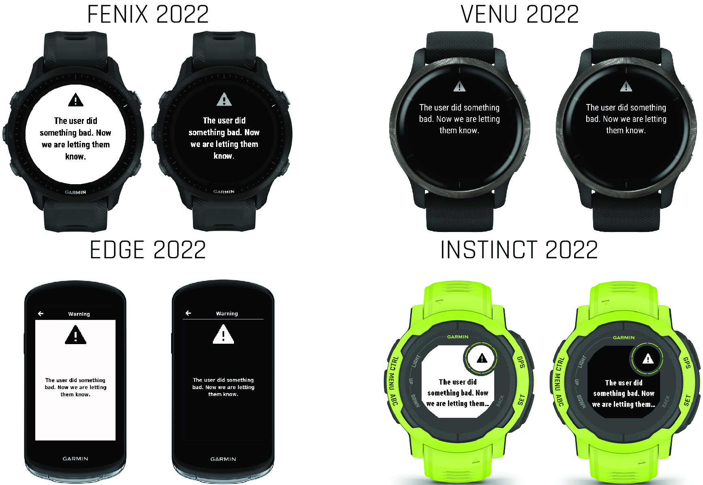

Color
The colors chosen for the product depend on the display technology and the graphic design language for the product.
Using Color Selectors
Personality UI provides context-specific color selectors that you can use with the resource system and in your code.
Example
Within layouts, combine the color with other selectors when adding layout components.
<!-- layout.xml -->
<!-- Prompt Title -->
<text-area text="@Strings.mainTitle" personality="
system_color_dark__text
prompt_size__title
prompt_loc__title
prompt_font__title
"/>Example
In Monkey C source, you can reference the color selector directly in code.
// View.mc
import Rez.Styles;
dc.setColor(
system_color_dark__text.color,
system_color_dark__text.background
);Light and Dark Themes

Many Garmin® products have both light and dark themes. Some products allow customers to choose a theme for each activity, while others have day and night modes that determine the theme. Components in the personality design system have all of their colors documented with color_light and color_dark selectors. On certain products, especially those with AMOLED displays, these selectors are the same.
If your app does not take night mode into account or does not run on products that have night mode, use only the color_dark selectors.
Example
<!-- drawables.xml -->
<drawable-list id="DarkBackground">
<shape type="rectangle" x="0" y="0" personality="
system_size__screen
system_color_dark__background
" />
</drawable-list>Example
<!-- layout.xml -->
<!-- The Main View for our app -->
<layout id="MainLayoutDark">
<!-- Dark Background -->
<drawable id="DarkBackground" />
<!-- ActionMenu hint -->
<bitmap id="actionMenuDark" personality="
system_icon_dark__hint_action_menu
system_loc__hint_action_menu" />
<!-- Prompt Title -->
<text-area text="@Strings.mainTitle" personality="
system_color_dark__text
prompt_size__title
prompt_loc__title
prompt_font__title
"/>
<!-- Prompt Body -->
<text-area text="@Strings.mainPrompt" personality="
system_color_dark__text
prompt_size__body_with_title
prompt_loc__body_with_title
prompt_font__body_with_title
" />
</layout>Example
For performance reasons, it is faster to track the day or night mode in your own local variable rather than querying the system on every update. The following example exposes day or night mode as a theme that can be accessed by pages in the app.
//! Application.mb
import Toybox.Application;
import Toybox.Lang;
import Toybox.System;
import Toybox.WatchUi;
enum Theme {
THEME_LIGHT,
THEME_DARK
}
class MyApp extends Application {
private var _theme as Theme;
// Theme initialization
public function initialize() {
AppBase.initialize();
// Test for night mode
if (Styles.device_info.hasNightMode &&
System.DeviceSettings has :isNightModeEnabled) {
_theme = System.getDeviceSettings().isNightModeEnabled ? THEME_DARK : THEME_LIGHT;
} else {
_theme = THEME_LIGHT;
}
}
// Application handler for changes in day/night mode
public function onNightModeChanged() {
// Handle a change in night mode
if (Styles.device_info.hasNightMode &&
System.DeviceSettings has :isNightModeEnabled) {
_theme = System.getDeviceSettings().isNightModeEnabled ? THEME_DARK : THEME_LIGHT;
} else {
_theme = THEME_LIGHT;
}
// Force a screen update.
WatchUi.requestUpdate();
}
// Theme accessor
public function getTheme() as Theme {
return _theme;
}
}Example
You can load different layouts based on whether your app is in day or night mode. The following example keeps track of the current mode and changes it if the theme changes.
// View.mb
//! View that shows the main menu for the app
class MainView extends WatchUi.View {
private var _theme as Theme;
//! Constructor
function initialize() {
View.initialize();
_theme = $.getApp().getTheme();
}
//! Handle layout
function onLayout(dc as Dc) as Void {
_theme = $.getApp().getTheme();
setLayout(
_theme == $.THEME_DARK ?
Rez.Layouts.MainLayoutDark(dc) :
Rez.Layouts.MainLayoutLight(dc)
);
}
function onUpdate(dc as Dc) as Void {
if ($.getApp().getTheme() != _theme) {
onLayout(dc);
}
View.onUpdate(dc);
}
}Selectors
| Selector | Context |
|---|---|
system_color_light__background, system_color_dark__background | The default system background color. |
system_color_light__text, system_color_dark__text | The default system text color. |
activity_color_light__background, activity_color_dark__background | The default activity background color. |
activity_color_light__text, activity_color_dark__text | The default activity text color. |
prompt_color_light__background, prompt_color_dark__background | The default prompt background color. |
prompt_color_light__title, prompt_color_dark__title | The text color for a title string in a prompt. |
prompt_color_light__body, prompt_color_dark__body | The text color for the body text of a prompt. |
confirmation_color_light__background, confirmation_color_dark__background | The default confirmation background color. |
confirmation_color_light__body, confirmation_color_dark__body | The default confirmation body text color. |